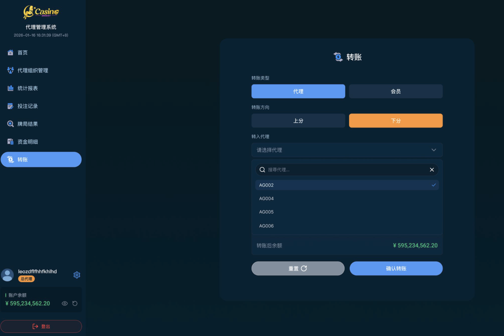

04
如何为下级上 / 下分
为直属代理或会员进行分数转入（上分）与转出（下分）操作

上分：将自身余额转移给下级（增加下级余额）。
下分：将下级余额收回至自身账户（减少下级余额）。
下分：将下级余额收回至自身账户（减少下级余额）。
方法 1
左边导航 > 转账
点击左边导航的【转账】，然后选择您的直属下级代理或会员，即可为其进行上/下分。
注意：
- 若您的层级为您的代理组织的最后一层，则您只能为您的直属会员上/下分。
- 若要为您自己上/下分，请联系您的上级。
方法 2：列表操作
-
1找到目标账号在「代理管理」或「会员管理」中搜索目标账号。
-
2点击上/下分点击操作列中的「上分」或「下分」按钮。
-
3填写金额并确认输入转账金额，核对自身或对方余额后点击确认。
上/下分操作不可撤销，请核对金额后再确认。所有记录可在「上下分记录」中查询。